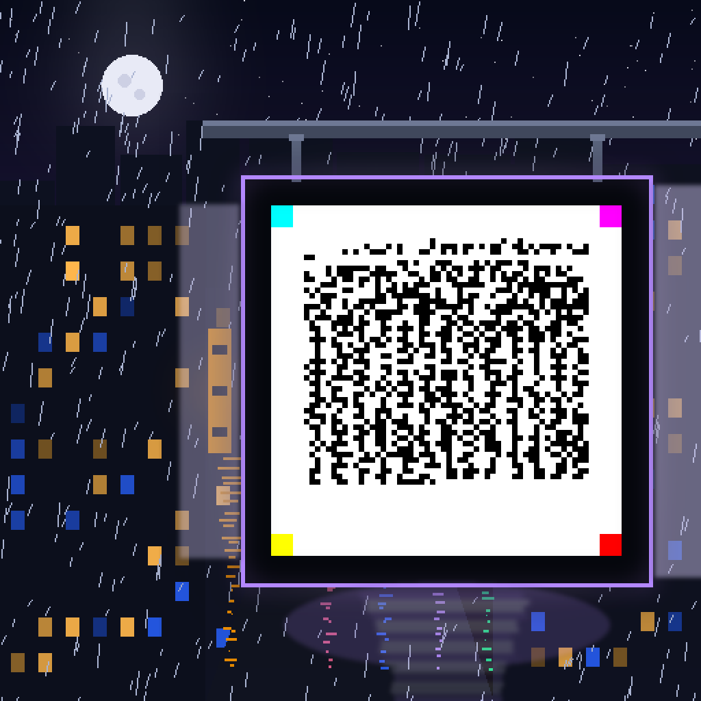
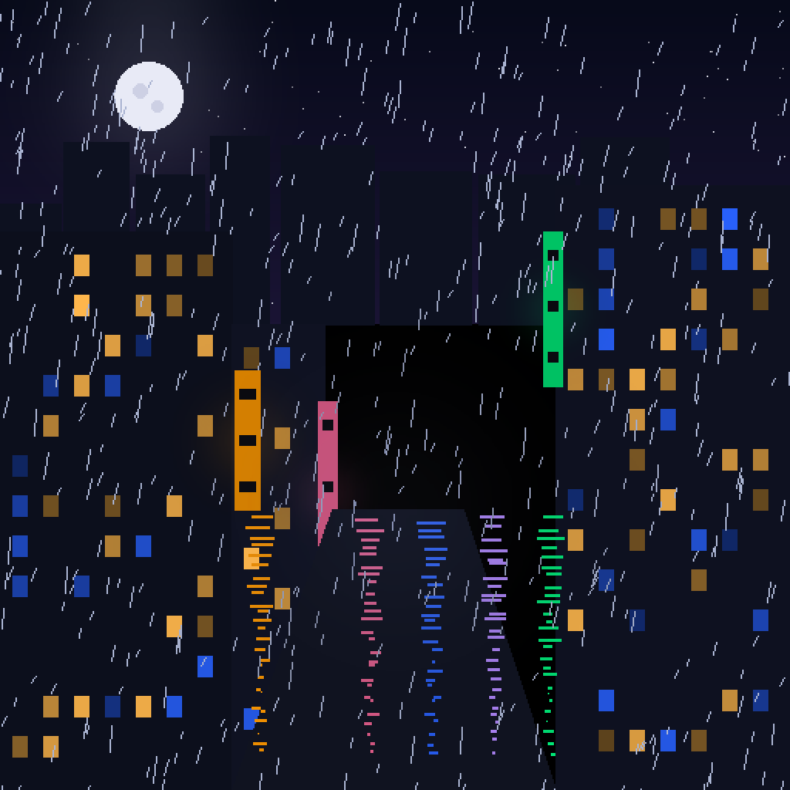

No spreadsheet. No metadata JSON. No third-party rarity site. The artwork's traits, edition number, rarity rank, and the artist's signature live inside the painting itself — as a real, scannable SV Code. Point the scanner at the sign. It reads the certificate.

Anyone who scans the sign recovers this certificate — signed
with the artist's key (BMP-0000 envelope, action 0xA47C, target NFT1).
The art field is the hash of the underlying painting, so the certificate and the
image can never be separated or swapped.
Artist key (demo):
038e2cb0ea841f2975ef15d762653ea481f6bc076bcb2683d21a8dc0bc5a486538
poc/make_nft_night_districts.py — deterministic, re-runnable
docs/js/decoder.js + docs/js/svc.js

Self-authenticating. The image file alone proves its collection, edition, traits, rarity, and the artist's authorization — offline, forever. A saved copy is a self-labeling poster, not a stolen original: the chain says who owns it, the seal says what it is.
Rarity without a spreadsheet. The rarity rank is signed by the artist at mint and travels with the pixels. No Excel, no rarity site, no trust.
Scannable in the physical world. Print it, hang it, project it — the seal still reads. A gallery wall that shows its own provenance.